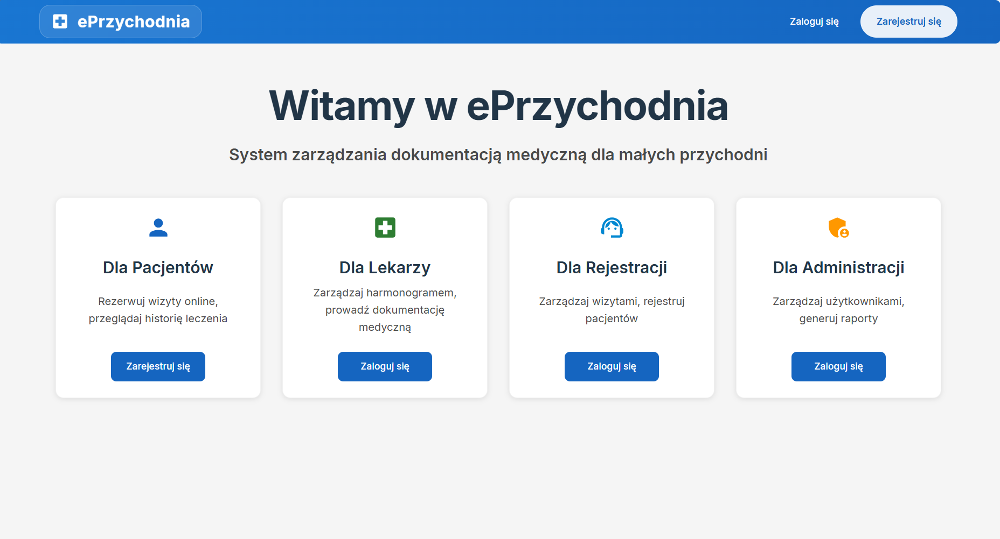
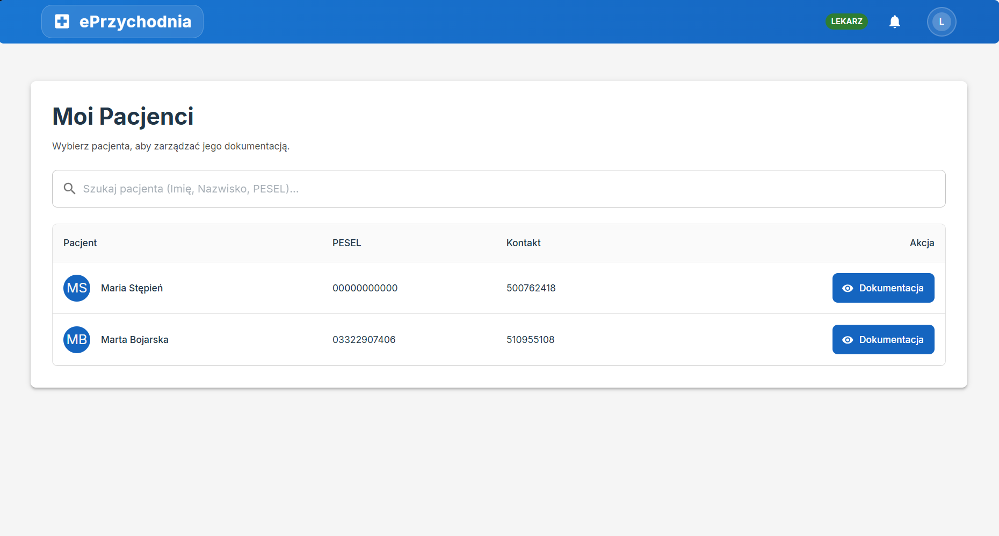

About the Project
The main objective of this thesis was to design and implement an e-Health class system that addresses common issues in small medical practices, such as inefficient paper-based workflows and communication barriers with patients.
Key Functionalities:
- Electronic Medical Records (EMR)
- Online appointment booking system
- Data security and GDPR compliance
- Doctor's panel with full patient history
Tech Stack
Java / Spring Boot
React.js
PostgreSQL
Redux Toolkit
Hibernate
Downloads
Open Presentation (PDF)System Preview

Main dashboard view

Medical records patients interface